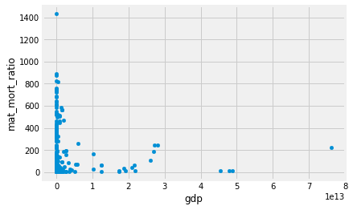

4.1 Introduction to data frames
Introduction to data frames
Start by loading the usual plotting libraries.
import numpy as np
import matplotlib.pyplot as plt
%matplotlib inline
# Make plots look a little bit more fancy
plt.style.use('fivethirtyeight')
Pandas is a Python package that implements data frames, and functions that operate on data frames.
import pandas as pd
Data frames and series
We start by loading data from a Comma Separated Value file (CSV file). If you are running on your laptop, you should download the gender_stats.csv file to the same directory as this notebook.
# Load the data file
gender_data = pd.read_csv('gender_stats.csv')
This is our usual assignment statement. The LHS is gender_data, the variable name. The RHS is an expression, that returns a value.
What type of value does it return?
type(gender_data)
pandas.core.frame.DataFrame
Pandas integrates with the Notebook, so, if you display a data frame in the notebook, it does a nice display of rows and columns.
gender_data
| country | fert_rate | gdp | health_exp_per_cap | health_exp_pub | prim_ed_girls | mat_mort_ratio | population | |
|---|---|---|---|---|---|---|---|---|
| 0 | Afghanistan | 4.954500 | 1.996102e+10 | 161.138034 | 2.834598 | 40.109708 | 444.00 | 3.271584e+07 |
| 1 | Albania | 1.769250 | 1.232759e+10 | 574.202694 | 2.836021 | 47.201082 | 29.25 | 2.888280e+06 |
| 2 | Algeria | 2.866000 | 1.907346e+11 | 870.766508 | 4.984252 | 47.675617 | 142.50 | 3.909906e+07 |
| 3 | American Samoa | NaN | 6.405000e+08 | NaN | NaN | NaN | NaN | 5.542200e+04 |
| 4 | Andorra | NaN | 3.197538e+09 | 4421.224933 | 7.260281 | 47.123345 | NaN | 7.954740e+04 |
| 5 | Angola | 6.123000 | 1.119365e+11 | 254.747970 | 2.447546 | NaN | 501.25 | 2.693754e+07 |
| 6 | Antigua and Barbuda | 2.082000 | 1.298213e+09 | 1152.493656 | 3.676514 | 48.291463 | NaN | 9.887240e+04 |
| 7 | Arab World | 3.397587 | 2.709059e+12 | 761.401727 | 2.873840 | 47.119776 | 161.00 | 3.899620e+08 |
| 8 | Argentina | 2.328000 | 5.509810e+11 | 1148.256142 | 2.782216 | 48.915810 | 53.75 | 4.297667e+07 |
| 9 | Armenia | 1.545500 | 1.088536e+10 | 348.663884 | 1.916016 | 46.782180 | 27.25 | 2.904683e+06 |
| 10 | Aruba | 1.663250 | NaN | NaN | NaN | 48.721939 | NaN | 1.037444e+05 |
| 11 | Australia | 1.861500 | 1.422994e+12 | 4256.058988 | 6.292381 | 48.576707 | 6.00 | 2.344456e+07 |
| 12 | Austria | 1.455000 | 4.074943e+11 | 4930.298893 | 8.504276 | 48.556078 | 4.00 | 8.566294e+06 |
| 13 | Azerbaijan | 1.980000 | 6.200300e+10 | 956.709718 | 1.197249 | 46.157363 | 25.25 | 9.531856e+06 |
| 14 | Bahamas, The | 1.877250 | 8.688000e+09 | 1727.128385 | 3.308626 | NaN | 81.50 | 3.819036e+05 |
| 15 | Bahrain | 2.065250 | 3.200401e+10 | 2030.158316 | 2.976386 | 49.116838 | 15.25 | 1.349810e+06 |
| 16 | Bangladesh | 2.193250 | 1.745451e+11 | 85.968844 | 0.860447 | 50.460564 | 194.75 | 1.593712e+08 |
| 17 | Barbados | 1.792250 | 4.413080e+09 | 1062.840088 | 4.828680 | 48.878181 | 28.00 | 2.833384e+05 |
| 18 | Belarus | 1.677000 | 6.478294e+10 | 986.236757 | 3.876601 | 48.685741 | 4.00 | 9.480348e+06 |
| 19 | Belgium | 1.755000 | 4.942218e+11 | 4297.838005 | 8.221003 | 48.864675 | 7.00 | 1.122850e+07 |
| 20 | Belize | 2.594750 | 1.680325e+09 | 471.967465 | 3.744844 | 48.317238 | 29.25 | 3.517636e+05 |
| 21 | Benin | 4.806750 | 8.778151e+09 | 83.726190 | 2.206916 | 47.211127 | 417.50 | 1.029371e+07 |
| 22 | Bermuda | 1.617500 | 5.555624e+09 | NaN | NaN | 48.423588 | NaN | 6.510080e+04 |
| 23 | Bhutan | 2.061250 | 1.975145e+09 | 277.526670 | 2.706908 | 49.572296 | 161.75 | 7.759054e+05 |
| 24 | Bolivia | 2.995250 | 3.150932e+10 | 381.007594 | 4.192031 | 48.464175 | 218.25 | 1.056280e+07 |
| 25 | Bosnia and Herzegovina | 1.267000 | 1.732333e+10 | 941.504655 | 6.841021 | 48.634905 | 11.75 | 3.574396e+06 |
| 26 | Botswana | 2.845000 | 1.511339e+10 | 880.909202 | 3.552071 | 48.844009 | 138.75 | 2.169170e+06 |
| 27 | Brazil | 1.795250 | 2.198766e+12 | 1303.199104 | 3.773473 | 47.784577 | 49.50 | 2.041595e+08 |
| 28 | British Virgin Islands | NaN | NaN | NaN | NaN | 47.581520 | NaN | 2.958540e+04 |
| 29 | Brunei Darussalam | 1.884000 | 1.571922e+10 | 1795.924160 | 2.335194 | 48.523699 | 23.75 | 4.115812e+05 |
| ... | ... | ... | ... | ... | ... | ... | ... | ... |
| 233 | Syrian Arab Republic | 2.967750 | NaN | 269.945739 | 1.507166 | 48.047394 | 62.00 | 1.931967e+07 |
| 234 | Tajikistan | 3.495750 | 8.036228e+09 | 169.745970 | 1.976367 | 48.260680 | 33.25 | 8.363844e+06 |
| 235 | Tanzania | 5.181250 | 4.493554e+10 | 131.704162 | 2.648609 | 50.666580 | 429.50 | 5.228132e+07 |
| 236 | Thailand | 1.516750 | 4.061369e+11 | 581.927487 | 3.183842 | 48.213034 | 21.00 | 6.838499e+07 |
| 237 | Timor-Leste | 5.797750 | 1.361430e+09 | 98.577296 | 1.140440 | 48.337367 | 240.25 | 1.212718e+06 |
| 238 | Togo | 4.620000 | 4.183610e+09 | 71.263825 | 2.037809 | 48.270471 | 380.75 | 7.230904e+06 |
| 239 | Tonga | 3.745750 | 4.391789e+08 | 250.962504 | 3.987285 | 47.697931 | 129.25 | 1.059094e+05 |
| 240 | Trinidad and Tobago | 1.782750 | 2.457095e+10 | 1778.148073 | 3.071370 | NaN | 63.25 | 1.353877e+06 |
| 241 | Tunisia | 2.140000 | 4.482437e+10 | 782.950522 | 4.118771 | 48.142132 | 63.25 | 1.114441e+07 |
| 242 | Turkey | 2.078000 | 8.951756e+11 | 997.374772 | 4.189521 | 48.789477 | 17.50 | 7.703435e+07 |
| 243 | Turkmenistan | 2.313750 | 3.797310e+10 | 288.572644 | 1.349303 | 48.906879 | 43.50 | 5.465637e+06 |
| 244 | Turks and Caicos Islands | NaN | NaN | NaN | NaN | 48.846884 | NaN | 3.370340e+04 |
| 245 | Tuvalu | NaN | 3.646999e+07 | 563.500592 | 15.506929 | 47.472414 | NaN | 1.091000e+04 |
| 246 | Uganda | 5.822500 | 2.594146e+10 | 132.892684 | 2.014349 | 50.099485 | 366.50 | 3.886534e+07 |
| 247 | Ukraine | 1.510250 | 1.353793e+11 | 628.579254 | 3.960185 | 48.984198 | 24.25 | 4.530270e+07 |
| 248 | United Arab Emirates | 1.793000 | 3.750271e+11 | 2202.407569 | 2.581168 | 48.789260 | 6.00 | 9.080299e+06 |
| 249 | United Kingdom | 1.842500 | 2.768864e+12 | 3357.983675 | 7.720655 | 48.791809 | 9.25 | 6.464156e+07 |
| 250 | United States | 1.860875 | 1.736912e+13 | 9060.068657 | 8.121961 | 48.758830 | 14.00 | 3.185582e+08 |
| 251 | Upper middle income | 1.795244 | 2.097441e+13 | 870.897512 | 3.358153 | 47.112001 | 43.25 | 2.540966e+09 |
| 252 | Uruguay | 2.027000 | 5.434513e+10 | 1721.507752 | 6.044403 | 48.295555 | 15.50 | 3.419977e+06 |
| 253 | Uzbekistan | 2.372750 | 6.134065e+10 | 334.476754 | 3.118842 | 48.387434 | 37.00 | 3.078450e+07 |
| 254 | Vanuatu | 3.364750 | 7.828760e+08 | 125.568712 | 3.689874 | 47.301617 | 82.50 | 2.588964e+05 |
| 255 | Venezuela, RB | 2.378250 | 3.761463e+11 | 896.815314 | 1.587088 | 48.400934 | 97.00 | 3.073452e+07 |
| 256 | Vietnam | 1.959500 | 1.818207e+11 | 368.374550 | 3.779501 | 48.021053 | 54.75 | 9.074240e+07 |
| 257 | Virgin Islands (U.S.) | 1.760000 | 3.812000e+09 | NaN | NaN | NaN | NaN | 1.041414e+05 |
| 258 | West Bank and Gaza | 4.208000 | 1.250822e+10 | NaN | NaN | 48.828520 | 47.50 | 4.296960e+06 |
| 259 | World | 2.464282 | 7.613006e+13 | 1223.941243 | 5.947058 | 48.076575 | 223.75 | 7.269321e+09 |
| 260 | Yemen, Rep. | 4.225750 | 3.681934e+10 | 207.949700 | 1.417836 | 44.470076 | 399.75 | 2.624661e+07 |
| 261 | Zambia | 5.394250 | 2.428099e+10 | 185.556359 | 2.687290 | 49.934484 | 233.75 | 1.563322e+07 |
| 262 | Zimbabwe | 3.943000 | 1.549551e+10 | 115.519881 | 2.695188 | 49.529875 | 398.00 | 1.542096e+07 |
263 rows × 8 columns
The data frame has rows and columns. Like other Python objects, it has attributes. These are pieces of data associated with the data frame. You have already seen methods, which are functions associated with the data frame. You can access attributes in the same way as you access methods, by typing the variable name, followed by a dot ., followed by the attribute name.
For example, one attribute of the data frame, is the shape:
gender_data.shape
(263, 8)
Another attribute is columns. This has the column names. For
example, here is a good way of quickly seeing the column names
for a data frame:
gender_data.columns
Index(['country', 'fert_rate', 'gdp', 'health_exp_per_cap', 'health_exp_pub',
'prim_ed_girls', 'mat_mort_ratio', 'population'],
dtype='object')
You need more information about what these column names refer to. Here are the longer descriptions from the original data source (link above):
fert_rate: Fertility rate, total (births per woman).gdp: GDP (current US$).health_exp_per_cap: Health expenditure per capita, PPP (constant 2011 international \$).health_exp_pub: Health expenditure, public (% of GDP).prim_ed_girls: Primary education, pupils (% female).mat_mort_ratio: Maternal mortality ratio (modeled estimate, per 100,000 live births).population: Population, total.
You have just seen array slicing (in Selecting with arrays. You remember that array slicing uses square brackets. Data frames also allow slicing. For example, we often want to get all the data for a single column of the data frame. To do this, we use the same square bracket notation as we use for array slicing, with the name of the column inside the square brackets.
gdp = gender_data['gdp']
What type of thing is this column of data?
type(gdp)
pandas.core.series.Series
Here are the values for gdp. You will notice that these are
the same values you saw in the “gdp” column when you displayed
the whole data frame.
gdp
0 1.996102e+10
1 1.232759e+10
2 1.907346e+11
3 6.405000e+08
4 3.197538e+09
5 1.119365e+11
6 1.298213e+09
7 2.709059e+12
8 5.509810e+11
9 1.088536e+10
10 NaN
11 1.422994e+12
12 4.074943e+11
13 6.200300e+10
14 8.688000e+09
15 3.200401e+10
16 1.745451e+11
17 4.413080e+09
18 6.478294e+10
19 4.942218e+11
20 1.680325e+09
21 8.778151e+09
22 5.555624e+09
23 1.975145e+09
24 3.150932e+10
25 1.732333e+10
26 1.511339e+10
27 2.198766e+12
28 NaN
29 1.571922e+10
...
233 NaN
234 8.036228e+09
235 4.493554e+10
236 4.061369e+11
237 1.361430e+09
238 4.183610e+09
239 4.391789e+08
240 2.457095e+10
241 4.482437e+10
242 8.951756e+11
243 3.797310e+10
244 NaN
245 3.646999e+07
246 2.594146e+10
247 1.353793e+11
248 3.750271e+11
249 2.768864e+12
250 1.736912e+13
251 2.097441e+13
252 5.434513e+10
253 6.134065e+10
254 7.828760e+08
255 3.761463e+11
256 1.818207e+11
257 3.812000e+09
258 1.250822e+10
259 7.613006e+13
260 3.681934e+10
261 2.428099e+10
262 1.549551e+10
Name: gdp, Length: 263, dtype: float64
What are these values like 6.405000e+08? These are numbers,
in scientific
notation.
Scientific notation is a compact way of writing very large or
very small numbers. The value after e above is the
exponent, in this case 08. The number above means $6.405
- 10^8$. For example, here is $2 * 10^7$:
2e7
20000000.0
Missing values and NaN
Looking at the values of gdp (and therefore, the values of the
gdp column of gender_data, we see that some of the values
are NaN, which means Not a Number. Pandas uses this marker to
indicate values that are not available, or missing data.
Numpy does not like to calculate with NaN values. Here is Numpy trying to calculate the median of the gdp values.
np.median(gdp)
nan
Notice the warning about an invalid value.
Numpy recognizes that one or more values are NaN and refuses to guess what to do, when calculating the median.
You saw from the shape above that gender_data has 263 rows. We can use the general Python len function, to see how many elements there are in gdp.
len(gdp)
263
As expected, it has the same number of elements as there are rows in gender_data.
The count method of the series gives the number of values that are not missing - that is - not NaN.
gdp.count()
246
Plotting with methods
The gdp variable is a sequence of values, so we can do a histogram on these values, as we have done histograms on arrays.
plt.hist(gdp)
(array([226., 5., 7., 4., 0., 1., 2., 0., 0., 1.]),
array([3.64699913e+07, 7.61303919e+12, 1.52260419e+13, 2.28390446e+13,
3.04520473e+13, 3.80650500e+13, 4.56780528e+13, 5.32910555e+13,
6.09040582e+13, 6.85170609e+13, 7.61300636e+13]),
<a list of 10 Patch objects>)

Notice the multiple warnings as Matplotlib tried to calculate the bin widths for the histogram. These are from the NaN values.
Another way to do the histogram, is to use the hist method of the series. Using the method can make the code a bit easier to read, and the method does discard the NaN values, by default, so it does not generate the same warnings.
gdp.hist()
<matplotlib.axes._subplots.AxesSubplot at 0x11768dda0>

Now we have had a look at the GDP values, we will look at the
values for the mat_mort_ratio column. These are the numbers
of women who die in childbirth for every 100,000 births.
mmr = gender_data['mat_mort_ratio']
mmr
0 444.00
1 29.25
2 142.50
3 NaN
4 NaN
5 501.25
6 NaN
7 161.00
8 53.75
9 27.25
10 NaN
11 6.00
12 4.00
13 25.25
14 81.50
15 15.25
16 194.75
17 28.00
18 4.00
19 7.00
20 29.25
21 417.50
22 NaN
23 161.75
24 218.25
25 11.75
26 138.75
27 49.50
28 NaN
29 23.75
...
233 62.00
234 33.25
235 429.50
236 21.00
237 240.25
238 380.75
239 129.25
240 63.25
241 63.25
242 17.50
243 43.50
244 NaN
245 NaN
246 366.50
247 24.25
248 6.00
249 9.25
250 14.00
251 43.25
252 15.50
253 37.00
254 82.50
255 97.00
256 54.75
257 NaN
258 47.50
259 223.75
260 399.75
261 233.75
262 398.00
Name: mat_mort_ratio, Length: 263, dtype: float64
mmr.hist()
<matplotlib.axes._subplots.AxesSubplot at 0x119dbef60>

We are interested in the relationship of gpp and mmr. Maybe richer countries have better health care, and fewer maternal deaths.
Here is a plot, using the standard Matplotlib scatter
function.
plt.scatter(gdp, mmr)
<matplotlib.collections.PathCollection at 0x11a08d908>

We can do the same plot using the plot.scatter method on the data frame. In that case, we specify the column names that should go on the x and the y axes.
gender_data.plot.scatter('gdp', 'mat_mort_ratio')
<matplotlib.axes._subplots.AxesSubplot at 0x11a137b00>

One advantage of doing it this way is that we get the column names on the x and y axes by default.
We often want to select rows from the data frame.
Say we want to select the rows corresponding the countries with a high GDP.
Looking at the histogram of gdp above, we could try this as a threshold to identify high GDP countries.
high_gdp = gdp > 1e13
high_gdp
0 False
1 False
2 False
3 False
4 False
5 False
6 False
7 False
8 False
9 False
10 False
11 False
12 False
13 False
14 False
15 False
16 False
17 False
18 False
19 False
20 False
21 False
22 False
23 False
24 False
25 False
26 False
27 False
28 False
29 False
...
233 False
234 False
235 False
236 False
237 False
238 False
239 False
240 False
241 False
242 False
243 False
244 False
245 False
246 False
247 False
248 False
249 False
250 True
251 True
252 False
253 False
254 False
255 False
256 False
257 False
258 False
259 True
260 False
261 False
262 False
Name: gdp, Length: 263, dtype: bool
type(high_gdp)
pandas.core.series.Series
Notice that high_gdp is a Boolean series, like the Boolean arrays you have already seen. It has True for elements corresponding to countries with gdp value greater than 1e13 and False otherwise.
We can use this Boolean series to select rows from the data frame. The loc attribute of the data frame allows us to locate values in the data frame. For our Boolean series, it works like this:
rich_gender_data = gender_data.loc[high_gdp]
rich_gender_data
| country | fert_rate | gdp | health_exp_per_cap | health_exp_pub | prim_ed_girls | mat_mort_ratio | population | |
|---|---|---|---|---|---|---|---|---|
| 44 | China | 1.558750 | 1.018279e+13 | 657.748859 | 3.015530 | 46.297964 | 28.75 | 1.364446e+09 |
| 60 | Early-demographic dividend | 2.636376 | 1.019283e+13 | 392.428268 | 2.595967 | 48.651143 | 169.00 | 3.083697e+09 |
| 61 | East Asia & Pacific | 1.781424 | 2.168128e+13 | 835.974259 | 4.687596 | 47.212490 | 63.00 | 2.265974e+09 |
| 62 | East Asia & Pacific (IDA & IBRD) | 1.811850 | 1.239991e+13 | 558.711100 | 2.815573 | 47.098031 | 66.75 | 1.996942e+09 |
| 63 | East Asia & Pacific (excluding high income) | 1.813950 | 1.242383e+13 | 558.702327 | 2.815498 | 47.115173 | 66.75 | 2.022090e+09 |
| 71 | Euro area | 1.551004 | 1.255692e+13 | 3913.466364 | 7.956080 | 48.610030 | 6.50 | 3.384615e+08 |
| 72 | Europe & Central Asia | 1.738094 | 2.191519e+13 | 2518.566323 | 7.130694 | 48.653599 | 16.75 | 9.032073e+08 |
| 75 | European Union | 1.570012 | 1.731910e+13 | 3448.910224 | 7.816628 | 48.658777 | 8.00 | 5.082110e+08 |
| 98 | High income | 1.686585 | 4.884635e+13 | 5045.885008 | 7.602022 | 48.701030 | 10.00 | 1.175934e+09 |
| 102 | IBRD only | 2.103185 | 2.607726e+13 | 625.357428 | 3.104682 | 48.026892 | 106.25 | 4.607548e+09 |
| 103 | IDA & IBRD total | 2.587557 | 2.803020e+13 | 507.044258 | 3.013687 | 47.896337 | 244.75 | 6.113147e+09 |
| 128 | Late-demographic dividend | 1.667820 | 1.862014e+13 | 838.259199 | 3.335746 | 47.046383 | 36.00 | 2.235352e+09 |
| 140 | Low & middle income | 2.595258 | 2.724634e+13 | 498.193061 | 2.982075 | NaN | 245.25 | 6.089148e+09 |
| 160 | Middle income | 2.361746 | 2.691014e+13 | 542.340940 | 2.996480 | 48.044140 | 185.75 | 5.468296e+09 |
| 177 | North America | 1.834404 | 1.908336e+13 | 8615.535450 | 8.066182 | 48.708683 | 13.50 | 3.541404e+08 |
| 180 | OECD members | 1.749418 | 4.787743e+13 | 4566.959377 | 7.636198 | 48.704364 | 15.00 | 1.273149e+09 |
| 193 | Post-demographic dividend | 1.636470 | 4.541806e+13 | 5124.214162 | 7.858170 | 48.649863 | 10.75 | 1.092637e+09 |
| 250 | United States | 1.860875 | 1.736912e+13 | 9060.068657 | 8.121961 | 48.758830 | 14.00 | 3.185582e+08 |
| 251 | Upper middle income | 1.795244 | 2.097441e+13 | 870.897512 | 3.358153 | 47.112001 | 43.25 | 2.540966e+09 |
| 259 | World | 2.464282 | 7.613006e+13 | 1223.941243 | 5.947058 | 48.076575 | 223.75 | 7.269321e+09 |
type(rich_gender_data)
pandas.core.frame.DataFrame
rich_gender_data is a new data frame, that is a subset of the
original gender_data frame. It contains only the rows where
the GDP value is greater than 1e13 dollars. Check the display
of rich_gender_data above to confirm that the values in the
gdp column are all greater than 1e13.
We can do a scatter plot of GDP values against maternal mortality rate, and we find, oddly, that for rich countries, there is little relationship between GDP and maternal mortality.
rich_gender_data.plot.scatter('gdp', 'mat_mort_ratio')
<matplotlib.axes._subplots.AxesSubplot at 0x11a00fe48>